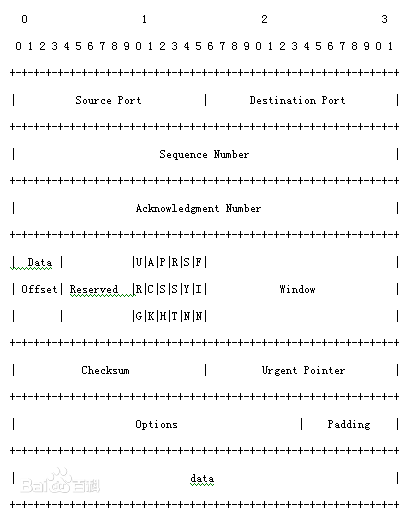
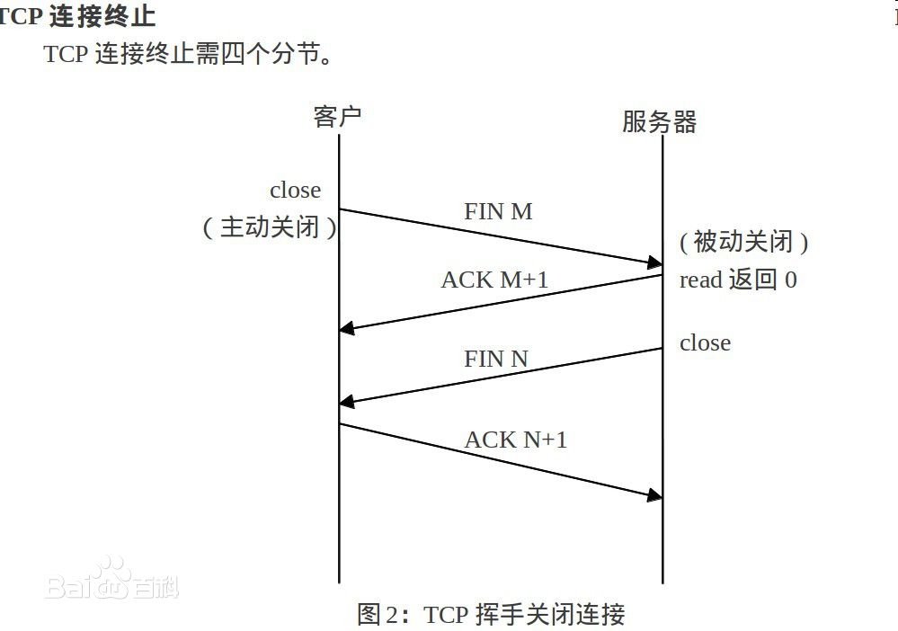
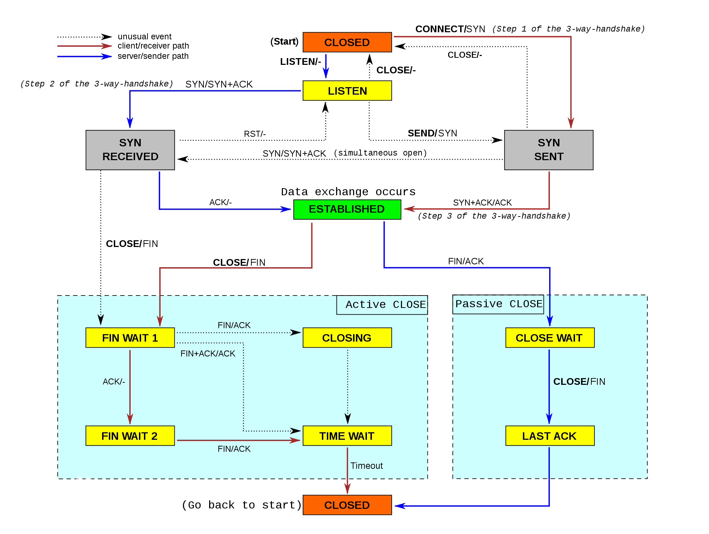

TCP
TCP（Transmission Control Protocol 传输控制协议）是一种面向连接的、可靠的、基于字节流的传输层通信协议，由IETF的RFC 793定义。
在简化的计算机网络OSI模型中，它完成第四层传输层所指定的功能，用户数据报协议（UDP）是同一层内另一个重要的传输协议。在因特网协议族（Internet protocol suite）中，TCP层是位于IP层之上，应用层之下的中间层。不同主机的应用层之间经常需要可靠的、像管道一样的连接，但是IP层不提供这样的流机制，而是提供不可靠的包交换。
应用层向TCP层发送用于网间传输的、用8位字节表示的数据流，然后TCP把数据流分区成适当长度的报文段（通常受该计算机连接的网络的数据链路层的最大传输单元（ MTU）的限制）。之后TCP把结果包传给IP层，由它来通过网络将包传送给接收端实体的TCP层。TCP为了保证不发生丢包，就给每个包一个序号，同时序号也保证了传送到接收端实体的包的按序接收。然后接收端实体对已成功收到的包发回一个相应的确认（ACK）；如果发送端实体在合理的往返时延（RTT）内未收到确认，那么对应的数据包就被假设为已丢失将会被进行重传。TCP用一个校验和函数来检验数据是否有错误；在发送和接收时都要计算校验和。
功能
当应用层向TCP层发送用于网间传输的、用8位字节表示的数据流，TCP则把数据流分割成适当长度的报文段，最大传输段大小（MSS）通常受该计算机连接的网络的数据链路层的最大传送单元（MTU）限制。之后TCP把数据包传给IP层，由它来通过网络将包传送给接收端实体的TCP层。
TCP为了保证报文传输的可靠，就给每个包一个序号，同时序号也保证了传送到接收端实体的包的按序接收。然后接收端实体对已成功收到的字节发回一个相应的确认(ACK)；如果发送端实体在合理的往返时延(RTT)内未收到确认，那么对应的数据（假设丢失了）将会被重传。
在数据正确性与合法性上，TCP用一个校验和函数来检验数据是否有错误，在发送和接收时都要计算校验和；同时可以使用md5认证对数据进行加密。
在保证可靠性上，采用超时重传和捎带确认机制。
在流量控制上，采用滑动窗口协议，协议中规定，对于窗口内未经确认的分组需要重传。
在拥塞控制上，采用广受好评的TCP拥塞控制算法（也称AIMD算法）。 该算法主要包括三个主要部分：1）加性增、乘性减；2）慢启动；3）对超时事件做出反应。
实行标准
TCP/IP(Transmission Control Protocol/Internet Protocol) 即传输控制协议/网间协议，是一个工业标准的协议集，它是为广域网（WAN）设计的。它是由ARPANET网的研究机构发展起来的。
TCP/IP的标准在一系列称为RFC的文档中公布。文档由技术专家、特别工作组、或RFC编辑修订。公布一个文档时，该文档被赋予一个RFC编号，如RFC959（FTP的说明文档）、RFC793（TCP的说明文档）、RFC791（IP的说明文档）等。最初的RFC一直保留而从来不会被更新，如果修改了该文档，则该文档又以一个新号码公布。因此，重要的是要确认你拥有了关于某个专题的最新RFC文档。通常在RFC的开头部分，有相关RFC的更新(update)、排错（errata）、作废（obsolete）信息，提示读者信息的时效性。
首部格式
TCP的首部格式：

---Source Port是源端口，16位。 ---Destination Port是目的端口，16位。 ---Sequence Number是发送数据包中的第一个字节的序列号，32位。 ---Acknowledgment Number是确认序列号，32位。 ---Data Offset是数据偏移，4位，该字段的值是TCP首部（包括选项）长度除以4。 ---标志位： 6位，URG表示Urgent Pointer字段有意义： ACK表示Acknowledgment Number字段有意义 PSH表示Push功能，RST表示复位TCP连接 SYN表示SYN报文（在建立TCP连接的时候使用） FIN表示没有数据需要发送了（在关闭TCP连接的时候使用） Window表示接收缓冲区的空闲空间，16位，用来告诉TCP连接对端自己能够接收的最大数据长度。 ---Checksum是校验和，16位。 ---Urgent Pointers是紧急指针，16位，只有URG标志位被设置时该字段才有意义，表示紧急数据相对序列号（Sequence Number字段的值）的偏移。
连接建立

TCP是因特网中的传输层协议，使用三次握手协议建立连接。当主动方发出SYN连接请求后，等待对方回答 SYN+ACK ，并最终对对方的 SYN 执行 ACK 确认。这种建立连接的方法可以防止产生错误的连接，TCP使用的流量控制协议是可变大小的滑动窗口协议。 TCP三次握手的过程如下： 客户端发送SYN（SEQ=x）报文给服务器端，进入SYN_SEND状态。 服务器端收到SYN报文，回应一个SYN （SEQ=y）ACK(ACK=x+1）报文，进入SYN_RECV状态。 客户端收到服务器端的SYN报文，回应一个ACK(ACK=y+1）报文，进入Established状态。 三次握手完成，TCP客户端和服务器端成功地建立连接，可以开始传输数据了。
连接终止
建立一个连接需要三次握手，而终止一个连接要经过四次握手，这是由TCP的半关闭（half-close）造成的。具体过程如下图所示。

TCP连接的终止 TCP连接的终止 (1) 某个应用进程首先调用close，称该端执行“主动关闭”（active close）。该端的TCP于是发送一个FIN分节，表示数据发送完毕。 (2) 接收到这个FIN的对端执行 “被动关闭”（passive close），这个FIN由TCP确认。 注意：FIN的接收也作为一个文件结束符（end-of-file）传递给接收端应用进程，放在已排队等候该应用进程接收的任何其他数据之后，因为，FIN的接收意味着接收端应用进程在相应连接上再无额外数据可接收。 (3) 一段时间后，接收到这个文件结束符的应用进程将调用close关闭它的套接字。这导致它的TCP也发送一个FIN。 (4) 接收这个最终FIN的原发送端TCP（即执行主动关闭的那一端）确认这个FIN。 既然每个方向都需要一个FIN和一个ACK，因此通常需要4个分节。 注意： (1) “通常”是指，某些情况下，步骤1的FIN随数据一起发送，另外，步骤2和步骤3发送的分节都出自执行被动关闭那一端，有可能被合并成一个分节。 (2) 在步骤2与步骤3之间，从执行被动关闭一端到执行主动关闭一端流动数据是可能的，这称为“半关闭”（half-close）。 (3) 当一个Unix进程无论自愿地（调用exit或从main函数返回）还是非自愿地（收到一个终止本进程的信号）终止时，所有打开的描述符都被关闭，这也导致仍然打开的任何TCP连接上也发出一个FIN。 无论是客户还是服务器，任何一端都可以执行主动关闭。通常情况是，客户执行主动关闭，但是某些协议，例如，HTTP/1.0却由服务器执行主动关闭。
可靠性
TCP提供一种面向连接的、可靠的字节流服务。面向连接意味着两个使用TCP的应用（通常是一个客户和一个服务器）在彼此交换数据包之前必须先建立一个TCP连接。这一过程与打电话很相似，先拨号振铃，等待对方摘机说“喂”，然后才说明是谁。在一个TCP连接中，仅有两方进行彼此通信。广播和多播不能用于TCP。 TCP通过下列方式来提供可靠性： 1．应用数据被分割成TCP认为最适合发送的数据块。这和UDP完全不同，应用程序产生的数据长度将保持不变。由TCP传递给IP的信息单位称为报文段或段（segment）。 2．当TCP发出一个段后，它启动一个定时器，等待目的端确认收到这个报文段。如果不能及时收到一个确认，将重发这个报文段。当TCP收到发自TCP连接另一端的数据，它将发送一个确认。TCP有延迟确认的功能，在此功能没有打开，则是立即确认。功能打开，则由定时器触发确认时间点。 3．TCP将保持它首部和数据的检验和。这是一个端到端的检验和，目的是检测数据在传输过程中的任何变化。如果收到段的检验和有差错，TCP将丢弃这个报文段和不确认收到此报文段（希望发端超时并重发）。 4．既然TCP报文段作为IP数据报来传输，而IP数据报的到达可能会失序，因此TCP报文段的到达也可能会失序。如果必要，TCP将对收到的数据进行重新排序，将收到的数据以正确的顺序交给应用层。 5．既然IP数据报会发生重复，TCP的接收端必须丢弃重复的数据。 6．TCP还能提供流量控制。TCP连接的每一方都有固定大小的缓冲空间。TCP的接收端只允许另一端发送接收端缓冲区所能接纳的数据。这将防止较快主机致使较慢主机的缓冲区溢出。 两个应用程序通过TCP连接交换8bit字节构成的字节流。TCP不在字节流中插入记录标识符。我们将这称为字节流服务（bytestreamservice）。如果一方的应用程序先传10字节，又传20字节，再传50字节，连接的另一方将无法了解发方每次发送了多少字节。只要自己的接收缓存没有塞满，TCP 接收方将有多少就收多少。一端将字节流放到TCP连接上，同样的字节流将出现在TCP连接的另一端。 另外，TCP对字节流的内容不作任何解释。TCP不知道传输的数据字节流是二进制数据，还是ASCⅡ字符、EBCDIC字符或者其他类型数据。对字节流的解释由TCP连接双方的应用层解释。 这种对字节流的处理方式与Unix操作系统对文件的处理方式很相似。Unix的内核对一个应用读或写的内容不作任何解释，而是交给应用程序处理。对Unix的内核来说，它无法区分一个二进制文件与一个文本文件。
重传策略
TCP协议用于控制数据段是否需要重传的依据是设立重发定时器。在发送一个数据段的同时启动一个重传，如果在重传超时前收到确认(Acknowlegement)就关闭该重传，如果重传超时前没有收到确认，则重传该数据段。在选择重发时间的过程中，TCP必须具有自适应性。它需要根据互联网当时的通信情况，给出合适的重发时间。
这种重传策略的关键是对定时器初值的设定。采用较多的算法是Jacobson于1988年提出的一种不断调整超时时间间隔的动态算法。其工作原理是：对每条连接TCP都保持一个变量RTT（Round Trip Time），用于存放当前到目的端往返所需要时间最接近的估计值。当发送一个数据段时，同时启动连接的定时器，如果在定时器超时前确认到达，则记录所需要的时间（M），并修正RTT的值，如果定时器超时前没有收到确认，则将RTT的值增加1倍。通过测量一系列的RTT（往返时间）值，TCP协议可以估算数据包重发前需要等待的时间。在估计该连接所需的当前延迟时通常利用一些统计学的原理和算法（如Karn算法），从而得到TCP重发之前需要等待的时间值。
窗口确认
TCP的一项功能就是确保每个数据段都能到达目的地。位于目的主机的TCP服务对接受到的数据进行确认，并向源应用程序发送确认信息。 TCP的状态机 TCP的状态机 使用数据报头序列号以及确认号来确认已收到包含在数据段的相关的数据字节。 TCP在发回源设备的数据段中使用确认号，指示接收设备期待接收的下一字节。这个过程称为期待确认。 源主机在收到确认消息之前可以传输的数据的大小称为窗口大小。用于管理丢失数据和流量控制。这些变化如图所示。

参考资料
- 冯先成，李德骏主编. 计算机网络及应用. 武汉市：华中科技大学出版社, 2011.07.
- W.Richard Stevens．TCP/IP详解卷1:协议：机械工业出版社，2000年4月1日